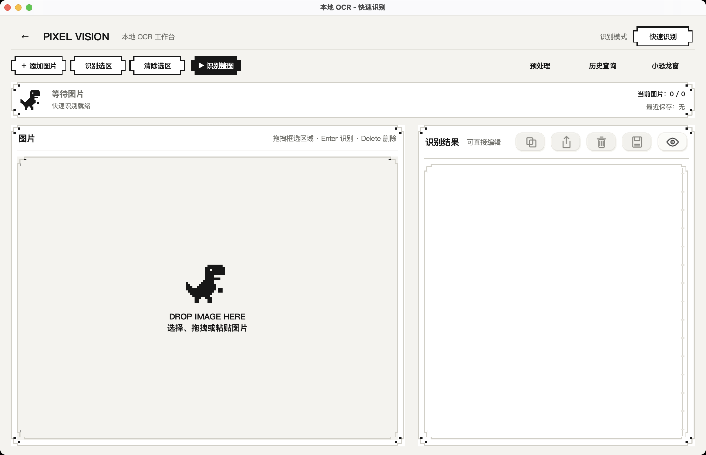

FPGA联调与显示同步
学到什么
负责电脑端串口界面，并参与软硬件联调，理解板端资源、视频输出和电脑显示之间的关系。
遇到问题现场显示器输出正常，但电脑端在接入分配器和采集卡前严重卡顿，长时间工作后会黑屏。原有板卡资源与硬件配置无法支撑预期的同步显示。
处理 / 下一步已购买并加入分配器和采集卡，补充硬件配置，解决电脑端卡顿、长时间工作后黑屏的同步显示问题。项目于2026年9—10月完成；后续继续记录设备型号、连接步骤与长时间运行情况。
相关项目：FPGA项目源码与说明
负责电脑端串口界面。加入分配器和采集卡，补充硬件配置，解决同步显示问题。
负责集合实现与测试。用数组和链表实现字符串集合，检查重复元素、容量与删除边界。
参与的桌面工具项目，支持图片与 PDF 识别、结果编辑和历史检索。
板卡资源有限，补充分配器和采集卡完成联调。
2026年9—10月完成，后续整理硬件连接与配置说明。
重复添加、空集合、删除边界和清空后复用。
本网页记录了我的个人信息、技能实践和2026年7月至10月的项目经历。项目包括FPGA串口界面、数据结构集合与测试，以及OCR团队工具。页面提供OCR界面截图、集合测试结果图与运行记录，并使用三个独立页面组织内容。学习记录包含问题现象、处理过程和结果，支持搜索、新增记录及反馈草稿表单。后续将补充硬件配置细节、长期运行记录和集合异常测试，持续维护项目文档。
网站由 index.html、learning.html、projects.html 三个独立页面组成，通过相对路径互相跳转。解压完整源码后双击 index.html；也可运行 python -m http.server 8765，然后访问 http://localhost:8765/。正文和样式在 templates/ 中维护，修改后运行 python tools/build.py。表单记录只保存在当前浏览器，公开更新须同步到源码。在线地址：https://Jingzhe-chen714.github.io/personal-growth-homepage/。
主页代码仓库 · README 与运行说明 · 首页完整截图
以下按实际参与月份记录，更新截至2026年11月15日；2026年7—10月的项目实践均已发生。
共 3 条学习记录
负责电脑端串口界面，并参与软硬件联调，理解板端资源、视频输出和电脑显示之间的关系。
遇到问题现场显示器输出正常，但电脑端在接入分配器和采集卡前严重卡顿，长时间工作后会黑屏。原有板卡资源与硬件配置无法支撑预期的同步显示。
处理 / 下一步已购买并加入分配器和采集卡，补充硬件配置，解决电脑端卡顿、长时间工作后黑屏的同步显示问题。项目于2026年9—10月完成；后续继续记录设备型号、连接步骤与长时间运行情况。
从2026年9月开始，负责数据结构项目中的集合实现与测试，比较数组和链表的存储方式。
遇到问题例如，重复添加apple后集合大小应保持3；99字节字符串应允许添加，100字节字符串应被拒绝；满容量并集失败时，原结果应保留。链表还需要覆盖首尾节点删除、释放与复用。
处理 / 下一步集合源码与测试记录已整理到仓库；项目仍在进行，后续继续补充异常分配、内存检查和设计报告。
2026年7月参与团队OCR项目，围绕图片与文档识别，了解识别结果编辑、SQLite历史记录和桌面界面的组合。
遇到问题需要把文件导入、识别、结果编辑与历史检索组织成完整流程。这里记录项目实践目标，具体个人模块将继续补充。
处理 / 下一步团队项目已完成，仓库包含Python、PaddleOCR、Tkinter与SQLite相关源码和使用说明，可继续复盘代码结构与运行方式。
没有找到匹配的记录，试试其他关键词或分类。
记录保存在当前浏览器，可以导出 JSON 备份；换设备或清除浏览器数据前，记得先导出。
发现页面问题或想交流项目，可以先填写反馈。内容仅在本页生成草稿，不会自动发送；请勿填写敏感信息。
整理目前参与的项目、具体分工和遇到的问题。
共 2 个项目
面向摄像头图像处理和电脑端控制的系统。仓库包括 Sobel / Canny 边缘处理、几何识别、板端工程、电脑控制台与验证资料。
| 观察位置 | 补充硬件前 | 处理与结果 |
|---|---|---|
| 显示器 | 输出正常 | 保留正常显示作为对照 |
| 电脑端界面 | 严重卡顿，长时间工作后黑屏 | 加入分配器和采集卡，解决同步显示问题 |
FPGA_engin/ 板端工程入口与 RTL 开发源码/pc_v11/ 电脑控制台源码 开发源码/tb/ 测试台 说明文档/ 使用与交付说明 验证记录/ 已有仿真与报告
已补充分配器和采集卡。后续完善配置清单和连接步骤，方便再次搭建。
项目仓库目前为私有，页面保留主要结构与实践记录。
项目从2026年9月开始，仍在进行，包含集合、英文文本排版、外部排序等练习。我参与的部分是集合实现与测试，用两种结构理解相同操作的实现差异。

int set_contains(const LinkedSet *set, const char *text)
{
const Node *current = set->head;
while (current != NULL) {
if (strcmp(current->text, text) == 0) return 1;
current = current->next;
}
return 0;
}摘编自 task1_set/linked_set.c 的 set_contains，压缩了部分排版。逐个比较字符串，命中返回 1，遍历结束返回 0；若忽略字符串比较长度因素，时间复杂度为 O(n)。
我参与的另一个团队项目是 project6。项目采用 Python、PaddleOCR、Tkinter 与 SQLite，提供图片 / PDF 识别、识别结果编辑和历史检索。项目于2026年7月完成，后续继续补充实践笔记。
